--OBJETIVOS--
Esta funcionalidad permite realizar la configuración de Objetivos necesarios para la gestión de planificación de actividades. Para acceder a estas funcionalidades el usuario debe estar autenticado y debe seleccionar la ruta: Inicio/Planificación/Planificación de actividades/Configuración/Objetivos, ver Figura 1.
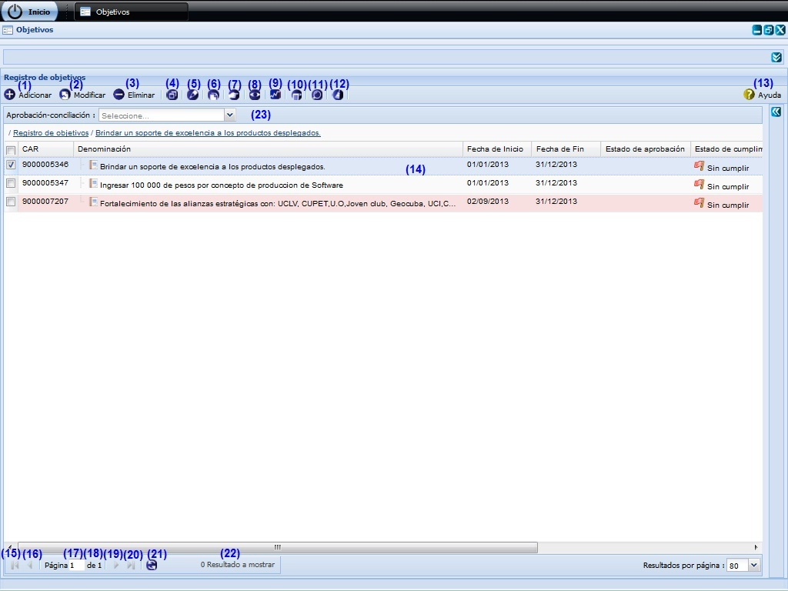
Figura 1. Interfaz y acciones de la funcionalidad Objetivos.
Las diferentes opciones que conforman la figura anterior permiten:
- Adicionar un objetivo, ver Acápite Adicionar un objetivo, esta acción permite adicionar un plan, cuando se presione el botón Aceptar o Aplicar de la interfaz el sistema mostrará un mensaje de información notificando que se adicionó el plan.
- Modificar un objetivo previamente seleccionada en el listado. Se mostrará la interfaz con los datos cargados, posibilitando que se modifiquen los que se requieran. La validación de cada uno de los campos de la interfaz será muy similar al descrito en el Acápite Adicionar un objetivo. En caso de seleccionar la opción Modificar y no hacer cambios en la información referente al objetivo seleccionado se debe mostrar un mensaje. Este botón estará deshabilitado hasta tanto no se haya seleccionado un objetivo.
- Eliminar un objetivo previamente seleccionado en el listado. Esta acción permite eliminar el(los) objetivo(s) deseado(s), una vez seleccionado(s) el(los) mismo(s) se procede a seleccionar la opción Eliminar de la interfaz, automáticamente se mostrará un mensaje de confirmación, que se puede Aceptar o Cancelar según sea el caso, de presionar la opción Aceptar el sistema le mostrará un mensaje de información sobre el éxito de la operación realizada, quedando eliminado(s) el(los) objetivo(s) seleccionado(s), si cancela el mensaje de confirmación, el sistema permanece en la interfaz principal y no elimina el(los) objetivo(s). Inicialmente la opción Eliminar de la interfaz estará deshabilitado hasta tanto no se haya seleccionado al menos un objetivo.
- Desglosar objetivo, ver acápite Desglosar objetivo . Inicialmente la opción Desglosar plan de la interfaz estará deshabilitado hasta tanto no se haya seleccionado el objetivo del que se desea consultar su desglose.
- Criterios de medidas del objetivo, ver acápite Criterios de medidas del objetivo . Inicialmente la opción Criterios de medidas del objetivo de la interfaz estará deshabilitado hasta tanto no se haya seleccionado el objetivo al que se le desea gestionar criterios de medida.
- Duplicar objetivo, ver acápite Duplicar objetivo, esta acción permite duplicar un objetivo a partir de un objetivo seleccionado. Dicho botón estará deshabilitado hasta tanto no se haya seleccionado un objetivo.
- Relacionar objetivo, ver acápite Relacionar objetivo, permite establecer relaciones del objetivo con otros elementos de la planificación que se encuentren registrados en el sistema. Este botón estará deshabilitado hasta tanto no se haya seleccionado un objetivo.
- Gestionar observaciones al objetivo, consultar acápite Gestionar observaciones al objetivo referido a la descripción de las operaciones que se pueden realizar con las observaciones. Inicialmente la opción Gestionar observaciones al objetivo de la interfaz estará deshabilitado hasta tanto no se haya seleccionado el objetivo a gestionar una observación.
- Tributar objetivo, ver acápite Tributar objetivo(s).
- Observar notificaciones generadas, ver Acápite Observar notificaciones generadas.
- Búsqueda avanzada, ver Acápite Búsqueda avanzada, esta acción permite buscar un objetivo entre los objetivos adicionados en el sistema.
- Limpiar filtro(s). Esta acción limpiará todos los criterios de búsqueda, deshabilitando los filtros realizados.
- Mostrar la ayuda de la funcionalidad.
- Se muestra el listado de objetivos.
- Ir a la primera página, mostrando los primeros objetivos.
- Ir a la página anterior.
- Mostrar el número de la página donde se encuentra, se puede introducir el número de la página a la que se desea ir.
- Mostrar el número máximo de páginas.
- Ir a la siguiente página.
- Ir a la última página.
- Actualizar el listado de objetivos.
- Mostrar la cantidad de resultados encontrados.
- Aprobación-conciliación. Podrá realizar un filtrado de los objetivos que se encuentren en un determinado nivel de aprobación, seleccionando uno de los dos posibles valores de la lista desplegable Aprobación-conciliación: Si o No. Una vez seleccionada la opción, el sistema le muestra en la interfaz 1 aquellos que coincidan con el valor de aprobación y conciliación especificado.
Adicionar un objetivo
Se presiona el botón Adicionar de la interfaz, ver opción (1) de la figura 1. Inmediatamente aparecerá una ventana donde se podrán especificar los datos relacionados con el objetivo que se desea adicionar, ver Figura 2.
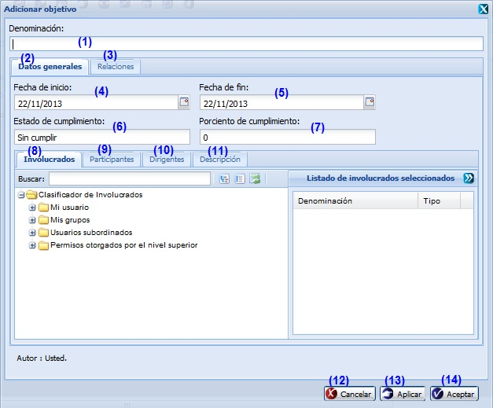
Figura 2. Interfaz Adicionar objetivo.
Las opciones de la figura anterior permiten:
- Introducir la denominación del objetivo que desea insertar.
- Seleccionar la pestaña donde se gestionan los datos generales del objetivo.
- Seleccionar la pestaña donde se podrá establecer relaciones del objetivo con otros elementos de la planificación que se encuentren registrados en el sistema.
- Seleccionar la fecha de inicio.
- Seleccionar la fecha de fin.
- El estado de cumplimiento el sistema lo determinará a partir del valor registrado en porciento de cumplimiento.
- Introducir el porciento de cumplimiento que presentará el plan a insertar.
- Seleccionar la pestaña donde se podrá seleccionar los usuarios que estén vinculados con el objetivo.
- Seleccionar la pestaña donde se podrá describir quienes participarán directamente en el cumplimiento del objetivo.
- Seleccionar la pestaña donde se podrá describir los dirigentes en el cumplimiento del objetivo.
- Seleccionar la pestaña donde se podrá detallar la composición del objetivo.
- Cancelar las acciones y salir de la interfaz sin guardar los datos.
- Guardar los datos y limpiar los campos de la interfaz, permitiendo adicionar otro objetivo.
- Adicionar los datos del objetivo al listado y cerrar la interfaz.
Validación de los campos:
El campo Denominación es obligatorio, en caso de dejar este campo vacío y presionar los botones Aceptar o Aplicar el sistema le notificará el error, subrayando el campo en rojo y mostrando un mensaje de error, al pasar el cursor del mouse por encima del campo subrayado, y el mensaje de error “Por favor verifique hay campo(s) vacío(s)”. Este campo acepta caracteres alfanuméricos y los caracteres especiales (“%#@!*() _;:,?-.). Al escribir otro tipo de carácter no permitido notificará subrayando el campo en rojo y mostrando el mensaje.
En el campo Porciento de cumplimiento solo podrá ingresar números entre los valores de 0 a 100. En caso de que ocurra el sistema debe mostrar el siguiente mensaje: “El valor máximo es de 100.”
El campo Fecha de inicio y Fecha de fin son obligatorios, en caso de dejar estos campos vacíos y presionar los botones Aceptar o Aplicar el sistema le notificará el error, subrayando el campo en rojo y mostrando un mensaje de error, al pasar el cursor del mouse por encima del campo subrayado, y el mensaje de error “Por favor verifique hay campo(s) vacío(s)”. Debe considerar que el sistema solo permite seleccionar una fecha de inicio que sea menor o igual que la fecha de fin.
Relaciones
En la pestaña Relaciones podrá establecer relaciones del objetivo con otros elementos de la planificación que se encuentren registrados en el sistema. Ver Figura 3
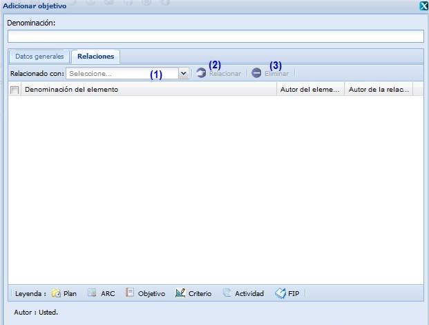
Figura 3. Interfaz Relaciones.
Las opciones de la figura anterior permiten:
- Seleccionar de la lista desplegable del campo nombrado Relacionado con el tipo de elemento de la planificación con el que se desea relacionar el objetivo a insertar. A continuación se activará el botón Relacionar. Presione dicho botón y se mostrará una interfaz con todos los elementos registrados en el sistema de acuerdo al tipo seleccionado, ver figura 4. Oprima el botón Cerrar si no desea efectuar relaciones o una vez establecida la relación.
- Mostrar una interfaz con todos los elementos registrados en el sistema de acuerdo al tipo seleccionado, ver figura 4. Seleccione el elemento que desee relacionar y presione el botón Seleccionar. Seguidamente se mostrará un mensaje de información indicando que las relaciones fueron insertadas. Posteriormente se cerrará la ventana y la nueva relación se mostrará en el panel inferior de la pestaña Relaciones. Oprima el botón Cerrar si no desea efectuar más relaciones.
- Eliminar una relación establecida con anterioridad.
Figura 4. Interfaz Elementos a los que tributa.
Involucrados
En la pestaña Involucrados podrá establecer relaciones del objetivo con otros elementos de la planificación que se encuentren registrados en el sistema. Ver Figura 5
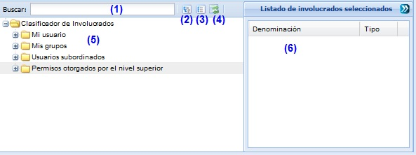
Figura 5. Interfaz Involucrado.
Las diferentes opciones que conforman la figura anterior permiten:
- Buscar involucrados por el criterio de búsqueda. Esta acción permite buscar un involucrado en específico a partir del criterio introducido. Luego de introducido el criterio de búsqueda se muestra el(los) involucrado(s) que cumple(n) con los datos especificados.
- Expande todos los involucrados.
- Colapsa todos los involucrados.
- Refrescar todos los involucrados.
- Listado de involucrados.
- Listado de involucrados seleccionados.
Desglosar objetivo
Se presiona el botón Desglosar objetivo de la interfaz, ver opción 4 de la figura 1. Inmediatamente aparecerá una ventana donde se podrán especificar los datos relacionados con el objetivo a desglosar, ver Figura 5. El desglose del objetivo consiste en un listado jerárquico de los elementos de la planificación con los que se encuentra relacionado. La ventana está provista de una Leyenda con el significado de los íconos mostrados en el desglose.
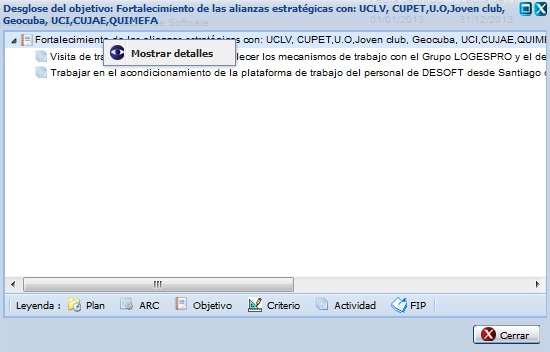
Figura 6. Interfaz Desglosar objetivo.
Nota: Si desea mostrar detalles de un objetivo insertado, procede a seleccionar el objetivo y selecciona mediante clic secundario (derecho) la opción Mostrar detalles, ver figura 6. Una vez presionada dicha opción el sistema le mostrara la interfaz Ver datos del objetivo, ver figura 7. En esta interfaz podrá conocer los datos del elemento seleccionado, estos datos no se permite modificarlos. Dicha interfaz de consulta se puede cerrar dando clic sobre el botón Cerrar que aparece en la parte inferior derecha.
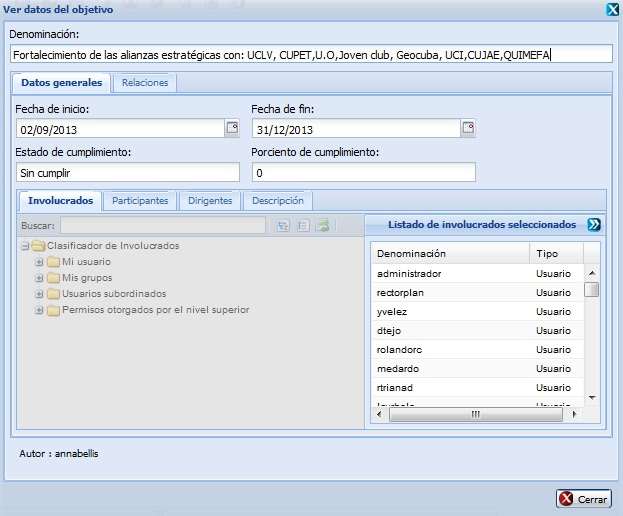
Figura 7. Interfaz Detalles del desglose del objetivo.
Criterios de medidas del objetivo
Se presiona el botón Criterios de medidas del objetivo de la interfaz, ver opción 5 de la figura 1. Inmediatamente aparecerá una ventana donde se podrán especificar los datos correspondientes a los criterios de medida realizados con el objetivo seleccionado, ver Figura 8.
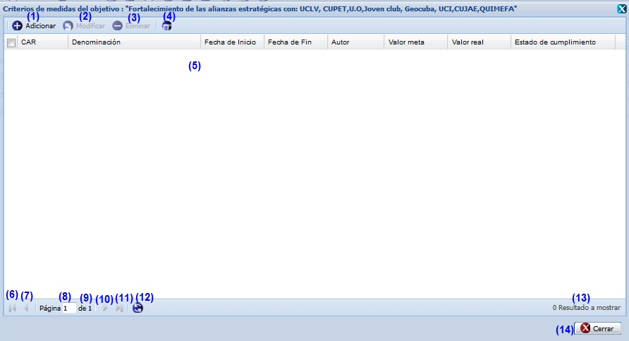
Figura 8. Interfaz Criterios de medida del objetivo.
Las diferentes opciones que conforman la figura anterior permiten:
- Adicionar un criterio, ver acápite Adicionar un criterio, esta acción permite adicionar un criterio.
- Modificar un criterio previamente seleccionada en el listado. Se mostrará la interfaz con los datos cargados, posibilitando que se modifiquen los que se requieran. La validación de cada uno de los campos de la interfaz será muy similar al descrito en el acápite Adicionar un criterio. Este botón estará deshabilitado hasta tanto no se haya seleccionado un plan. Al realizar las modificaciones es mostrado un mensaje indicando que se ejecutó correctamente la operación.
- Eliminar un criterio previamente seleccionado en el listado. Esta acción permite eliminar el(los) criterio(s) deseado(s), una vez seleccionado(s) se procede a seleccionar la opción Eliminar de la interfaz, automáticamente se mostrará un mensaje de confirmación, que se puede Aceptar o Cancelar según sea el caso, de presionar la opción Aceptar el sistema le mostrará un mensaje de información sobre el éxito de la operación realizada, quedando eliminado el(los) permiso(s) seleccionado(s), si cancela el mensaje de confirmación, el sistema permanece en la interfaz principal y no elimina el(los) criterio(s).
- Observar notificaciones generadas, ver Observaciones notificaciones generadas.
- Se muestra el listado de criterios.
- Ir a la primera página, mostrando los primeros criterios.
- Ir a la página anterior.
- Mostrar el número de la página donde se encuentra, se puede introducir el número de la página a la que se desea ir.
- Mostrar el número máximo de páginas.
- Ir a la siguiente página.
- Ir a la última página.
- Actualizar el listado de criterios.
- Mostrar la cantidad de resultados encontrados.
- Cerrar la ventana. Al terminar de realizar las operaciones deseadas sobre los criterios de medida de un objetivo puede cerrar la ventana Criterios de medidas del objetivo dando clic sobre el botón Cerrar.
Adicionar un criterio
Se presiona el botón Adicionar de la interfaz, ver opción 1 de la figura 8. Inmediatamente aparecerá una ventana donde se podrán especificar los datos relacionados con el criterio que se desea adicionar, ver Figura 9.
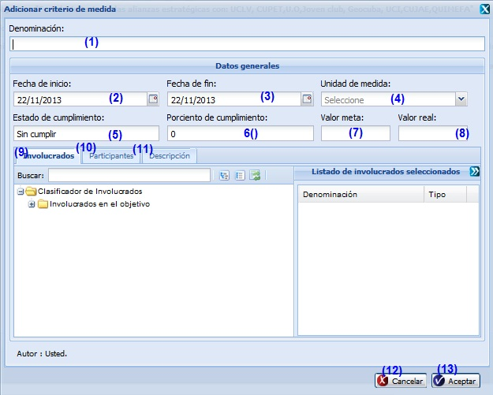
Figura 9. Interfaz Adicionar criterio de medida.
Las opciones de la figura anterior permiten:
- Introducir la denominación del criterio que desea insertar.
- Seleccionar la fecha de inicio del criterio a insertar.
- Seleccionar la fecha de fin del criterio a insertar.
- Seleccionar la unidad de medida que presentará el criterio a insertar.
- El estado de cumplimiento el sistema lo determinará a partir del valor registrado en porciento de cumplimiento.
- Introducir el porciento de cumplimiento que presentará el criterio a insertar.
- Introducir el valor meta que presentará el criterio a insertar.
- Introducir el valor real que presentará el criterio a insertar.
- Seleccionar las personas o usuarios que estén vinculados con el objetivo.
- Describir quienes participarán directamente en el cumplimiento del criterio de medida del objetivo.
- Detallar la composición del criterio de medida del objetivo.
- Cancelar las acciones y salir de la interfaz sin guardar los datos.
- Adicionar los datos del criterio al listado y cerrar la interfaz.
Validación de los campos:
- El campo Denominación es obligatorio, en caso de dejar este campo vacío y presionar los botones Aceptar o Aplicar el sistema le notificará el error, subrayando el campo en rojo y mostrando un mensaje de error, ver Acápite 6.1, al pasar el cursor del mouse por encima del campo subrayado, y el mensaje de error “Por favor verifique hay campo(s) vacío(s)”. Este campo acepta caracteres alfanuméricos y los caracteres especiales (“%#@!*() _;:,?-.). Al escribir otro tipo de carácter no permitido notificará subrayando el campo en rojo y mostrando el mensaje.
- En el campo Porciento de cumplimiento solo podrá ingresar números entre los valores de 0 a 100. En caso de que ocurra el sistema debe mostrar el siguiente mensaje: “El valor máximo es de 100.”
- El campo Fecha de inicio y Fecha de fin son obligatorios, en caso de dejar estos campos vacíos y presionar el botón Aceptar el sistema le notificará el error, subrayando el campo en rojo y mostrando un mensaje de error, al pasar el cursor del mouse por encima del campo subrayado, y el mensaje de error “Por favor verifique hay campo(s) vacío(s)”. Debe considerar que el sistema solo permite seleccionar una fecha de inicio que sea menor o igual que la fecha de fin.
- Los campos Unidad de medida, Valor meta y Valor real son obligatorios, en caso de dejar estos campos vacíos y presionar el botón Aceptar el sistema le notificará el error, subrayando el campo en rojo y mostrando un mensaje de error, al pasar el cursor del mouse por encima del campo subrayado, y el mensaje de error “Por favor verifique hay campo(s) vacío(s)”.
Duplicar objetivo
Se presiona el botón Duplicar objetivo de la interfaz, ver opción (6) de la figura 1. Inmediatamente aparecerá una ventana donde son mostrados los datos correspondientes al objetivo y es posible efectuar los cambios de interés, ver Figura 10.
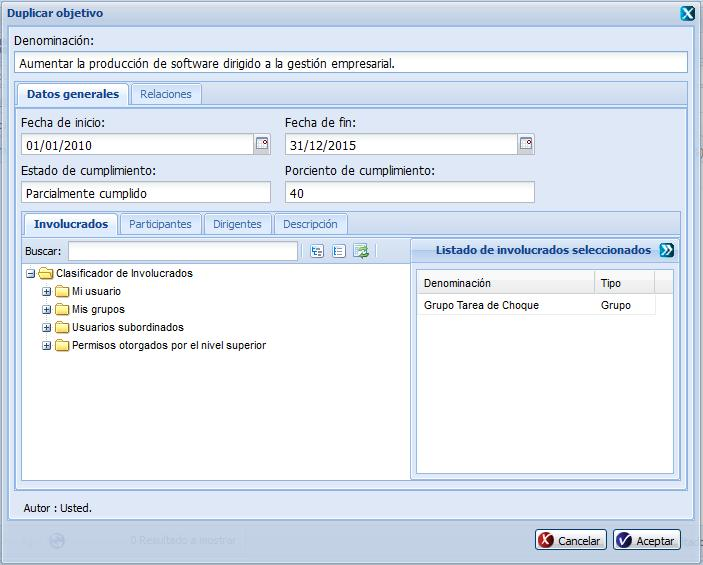
Figura 10. Interfaz duplicar objetivo.
Nota: Los nuevos datos introducidos a la hora de duplicar el objetivo deben cumplir con las condiciones especificadas para el Adicionar objetivos, en caso contrario se mostrarán los mensajes de información en dependencia del error cometido. Si se modifican correctamente los datos deseados, es mostrado un mensaje indicando que se ejecutó correctamente la operación.
Relacionar objetivo
Se presiona el botón Relacionar objetivo de la interfaz, ver opción (7) de la figura 1. Inmediatamente aparecerá una ventana donde es posible establecer las relaciones., ver Figura 11.
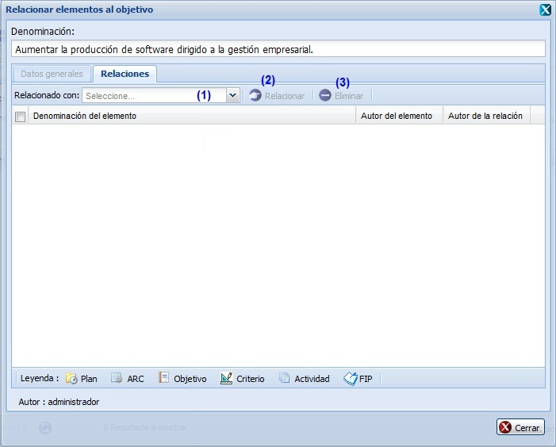
Figura 11. Interfaz Relaciones.
Las opciones de la figura anterior permiten:
- Seleccionar de la lista desplegable del campo nombrado Relacionado con el tipo de elemento de la planificación con el que se desea relacionar el objetivo a insertar. A continuación se activará el botón Relacionar. Presione dicho botón y se mostrará una interfaz con todos los elementos registrados en el sistema de acuerdo al tipo seleccionado, ver figura 12. Oprima el botón Cerrar si no desea efectuar relaciones o una vez establecida la relación.
- Mostrar una interfaz con todos los elementos registrados en el sistema de acuerdo al tipo seleccionado, ver figura 12. Seleccione el elemento que desee relacionar y presione el botón Seleccionar. Seguidamente se mostrará un mensaje de información indicando que las relaciones fueron insertadas. Posteriormente se cerrará la ventana y la nueva relación se mostrará en el panel inferior de la pestaña Relaciones. Oprima el botón Cerrar si no desea efectuar más relaciones.
- Eliminar una relación establecida con anterioridad.
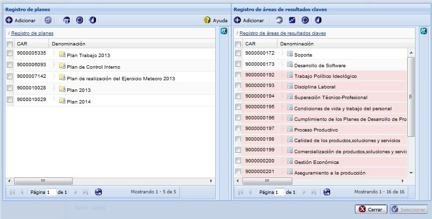
Figura 12. Interfaz Elementos a los que tributa.
Nota: El primer panel mostrará un listado de planes y el otro un listado de áreas de resultados claves, seleccione al menos un área de resultados claves y un plan. Si se seleccionan planes o áreas de resultados claves que no habían sido relacionados previamente, el sistema procede a establecer la relación.
Tributar objetivo(s)
Se presiona el botón Tributar objetivo(s) de la interfaz, ver opción 9 de la figura 1. Inmediatamente aparecerá una ventana que permite al objetivo seleccionado relacionarse con los diferentes elementos que están definidos., ver Figura 13. En este caso se procede a Relacionar objetivo(s), ver acápite Relacionar objetivo.
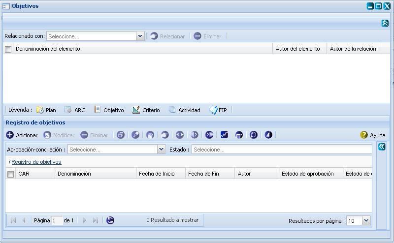
Figura 13. Interfaz Tributar objetivo.
Búsqueda avanzada
Para efectuar una búsqueda avanzada de un objetivo en específico, debe seleccionar la opción Búsqueda avanzada de la figura 1, luego de presionado el mismo, el sistema le mostrará la interfaz Opciones de búsqueda donde tendrá que tener en cuenta los siguientes pasos: ver Figura 14.
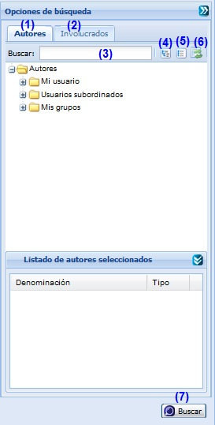
Figura 14. Interfaz Búsqueda avanzada.
Las diferentes opciones que conforman la figura anterior permiten:
- Seleccionar pestaña de Autores.
- Seleccionar pestaña de Involucrados.
- Introducir el criterio de búsqueda para buscar objetivos. Esta acción permite buscar un objetivo en específico a partir del criterio introducido. Luego de introducido el criterio de búsqueda se muestra el autor o involucrado que cumple con los datos especificados. En caso de que no exista un autor o involucrado que coincida con el criterio de búsqueda especificado no se obtendrá ninguna respuesta.
- Expande todos los autores.
- Colapsa todos los autores.
- Refrescar todos los autores.
- Realizar la búsqueda en el árbol de autores o involucrados en dependencia de la pestaña seleccionada.
Gestionar observaciones al objetivo
Se presiona el botón Gestionar observaciones al objetivo de la interfaz, ver opción 8 de la figura 1. Inmediatamente aparecerá una ventana donde se podrán especificar los datos relacionados con el objetivo que se le desea gestionar una observación, ver Figura 15.
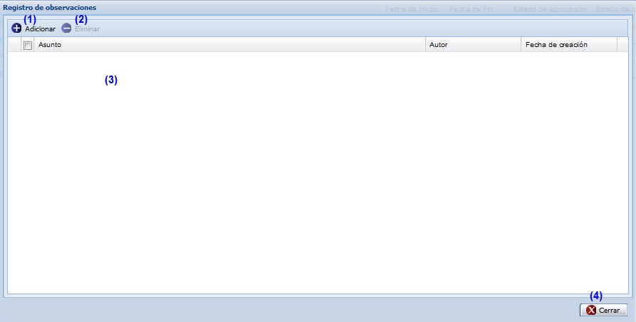
Figura 15. Interfaz Registro de observaciones.
Las opciones de la figura anterior permiten:
- Adicionar observaciones, ver Acápite Adicionar observaciones, esta acción permite adicionar observaciones al objetivo.
- Eliminar una observación previamente seleccionada en el listado de observaciones de un objetivo. Esta acción permite eliminar la(s) observación(es) deseada(s), una vez seleccionada(s) la(s) misma(s) se procede a seleccionar la opción Eliminar de la interfaz, automáticamente se mostrará un mensaje de confirmación, que se puede Aceptar o Cancelar según sea el caso, de presionar la opción Aceptar el sistema le mostrará un mensaje de información sobre el éxito de la operación realizada, quedando eliminada(s) la(s) observación(es) seleccionada(s), si cancela el mensaje de confirmación, el sistema permanece en la interfaz Registro de observaciones y no elimina la(s) observación(es). Inicialmente la opción Eliminar de la interfaz estará deshabilitado hasta tanto no se haya seleccionado la(s) observación(es) a eliminar.
- Mostrar listado de observaciones del objetivo.
- Cuando se presione el botón Cerrar de la interfaz el sistema mostrará en el objetivo seleccionado el campo de Observaciones activo si adicionó alguna observación al objetivo seleccionado.
Adicionar observaciones
Se presiona el botón Adicionar observaciones de la interfaz, ver opción 1 de la figura 15. Inmediatamente aparecerá una ventana donde se podrán especificar las observaciones del objetivo, ver Figura 16
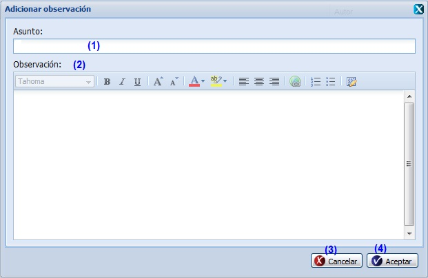
Figura 16. Interfaz Adicionar observación.
Las opciones de la figura anterior permiten:
- Introducir el asunto de la observación que desea insertar el objetivo.
- Introducir la observación del objetivo. Este dato no es obligatorio.
- Cancelar las acciones y salir de la interfaz sin guardar los datos.
- Adicionar los datos de la observación y cerrar la interfaz. El sistema mostrará un mensaje de información notificando que se adicionó la observación al objetivo.
Validación de los campos:
- El campo Asunto es obligatorio, en caso de dejar este campo vacío y presionar los botones Aceptar o Aplicar el sistema le notificará error, subrayando el campo en rojo y mostrando un mensaje de error, al pasar el cursor del mouse por encima del campo subrayado, y el mensaje de error “Por favor verifique hay campo(s) vacío(s)”. Este campo acepta caracteres alfanuméricos y algunos caracteres especiales (“%#@!*() _;:,?-.). Al escribir otro tipo de carácter no permitido notificará subrayando el campo en rojo y mostrando el mensaje. Por último debe saber que no es posible adicionar una nueva observación con el mismo asunto de otra que ya está registrado en el sistema, de suceder esto el sistema le notificará con el siguiente mensaje de error.
- El campo Observación puede ser vacío y admite cualquier tipo de caracteres de longitud infinita.